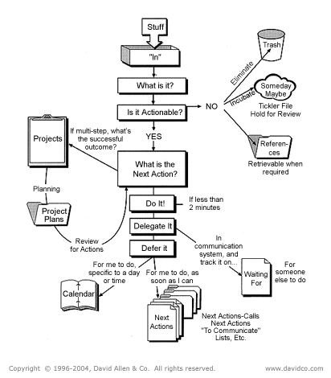
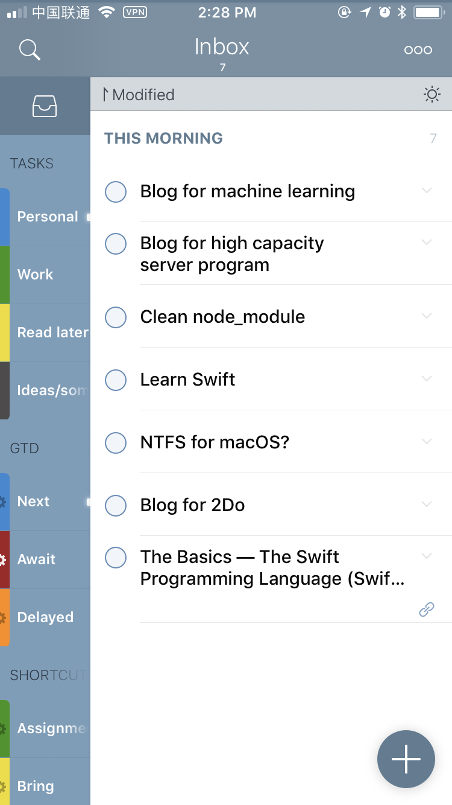
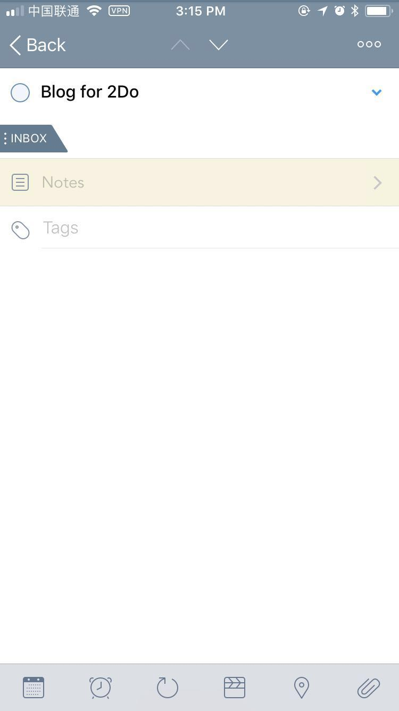
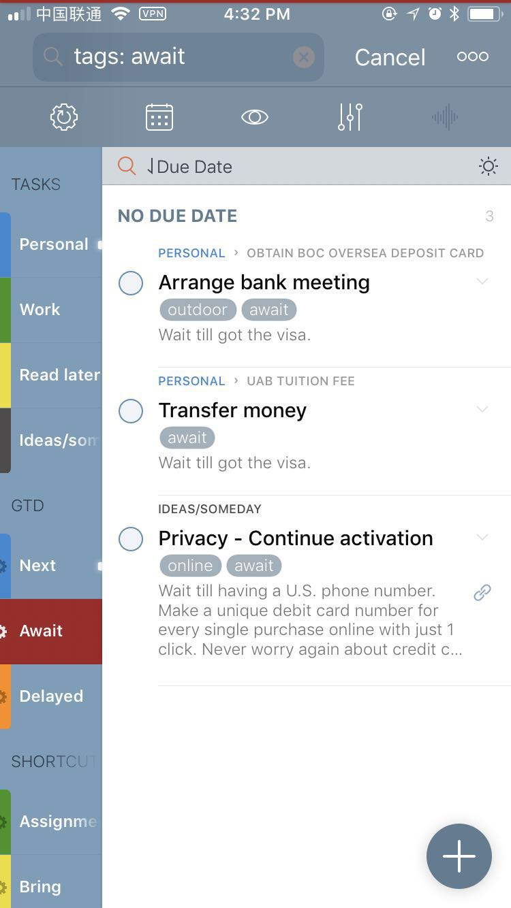
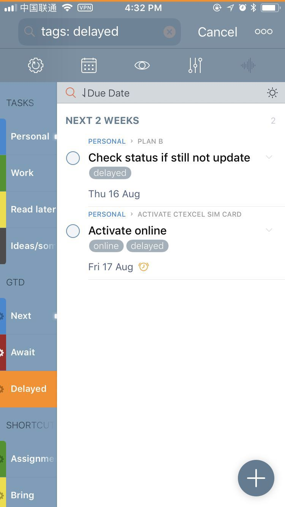

![LeetCode 刷题记录: 101. Symmetric Tree [Python]](/images/thumbnail.svg)
作为一个拖延症晚期的选手，经常视deadline为第一生产力，不到最后一分钟坚决不做事¯\_(ツ)_/¯。这使得在日常生活中，经常会将一骡子未完成的事情记在脑子中。再加上经常忘事的属性，久而久之就会将一些需要做的事情彻底遗忘在脑海中，不得不说深受其害。我曾经非常希望能够改掉忘记完成事情的这个坏毛病，理论上来说，遇到事情第一时间完成便是最好的了。但是，拖延症是改不了的。这辈子也改不了的。那么，如何改变这样的现状呢？正在挠头之际，GTD®出现了。
GTD®（又称“尽管去做”，Getting Things Done®) 源自David Allen的同名书籍，是一种行为管理的方法。这种方法要求个人将目前正在进行的所有工作以及任务使用 记录 的方式（通过纸笔、电子设备等）从头脑中移出来，使得这些外部设备充当 “第二大脑”，让自己 不再需要在进行一项工作的同时惦记着其他未完成的工作，从而能够专心致志地完成当前的工作，在同时面对一大堆工作的时候也能够有条不紊地处理。
不过，GTD®所承担的“第二大脑”，又和印象笔记所推崇的“第二大脑”有一定区别。在印象笔记中，“第二大脑”所承担的任务是让外部设备辅助记下各种生活中的资料以及想法，而GTD®的作用则更像是RPG游戏中的“任务列表”：让外部设备来辅助记下目前以及以后需要做的工作。也许有人会说，这不就是Todo嘛，是的，但又不是。其实GTD®不过是经过改造的一种Todo的使用方式。但这种新的使用方式却让Todo的效率有了极大提高。也因为如此，只要有一款上手的Todo应用，经过些许调整就能够无缝转换到GTD®的方式来，转换成本非常低。
对于第一次接触GTD®的人来说，最全面的入门方式当然就是去看原著。网上也有中文的翻译版本可以参考。不过原书由于出版的年代比较久远，使用的是比较原始的纸张记录的方式，对于互联网以及无纸化办公普及的今天相比有些落后。对于没有碰过纸笔快一年的我来说，再用回硬核的笔记本的方法实在太麻烦了。万幸的是手机里还藏着一款Todo应用—— 2Do。因此在读完全书以后，我尝试将书中的概念逐一映射到2Do里面，总结了一套使用2Do作为GTD®工具的方案。经过两三个月的修改以及使用，自以为这套方法已经进化得比较成熟了，所以在这里放出来给大家参考一下。
GTD® on 2Do
2Do是一款比较全面的Todo类应用。它支持iOS/Mac/Android三种平台，可以添加任务(Task)、项目(Project)、以及清单(Checklist)三种任务类别，并且能够为每项任务标记标签(Tags)；在分类功能中，2Do支持进行分类的一般列表(List)，以及最重要的 智能列表(Smart List) 。智能列表实际上是一个可保存筛选参数的筛选器，他可以从所有任务中按照条件筛选出符合要求的任务并且展示出来。通过创建一系列智能列表我们就可以得到一系列内容随任务状态而改变的动态列表，这也是在这套方法中GTD®能够实现的基础。具体的细节会在实际操作中进行演示。
Inbox

从上图可以看出，在GTD®的概念中，所有的想法（以及工作，以及任务）首先应该去到的地方应该是”In”，也就是 Inbox 。意思是说，当脑海中突然闪现某种想法的时候，或者有一大堆任务等待着倾诉的时候，应当第一时间把它们扔进 Inbox 区域中。不过在这里，与一般Todo记录事件的方式不同在于，GTD®不要求第一时间将添加进来的记录进行分类。Inbox作为事件的缓冲区域，所有进来的内容无需做任何处理，直接扔进来就好了。因此可以看到我的 Inbox 区域基本上是杂乱无章的。

因此，制定一个专门的时间用于整理 Inbox 中的内容显得尤其重要。在整理的时候，首先需要制定一个规则。必须从上往下，或从下往上处理所有当前的内容，而不允许有跳过的情况。这一点Allen在书中曾明确要求过，就是为了杜绝积压的现象出现。因为假如有一条记录一直压在Inbox中从来不去处理，那么久而久之就会习惯积压事件，那么 Inbox 就失去了作为 事件缓冲区 的意义。
下一步是什么？
对于事件的整理部分，GTD®制定了一系列要求。对于每一条记录，首先应当考虑的是“下一步是什么？”。比如上面截图中的某一条记录Blog for 2Do:

因为Blog for 2Do是一个工作，因此GTD®要求列出这个工作的接下来需要进行的具体操作：
为2Do写博客：
- 新建一份Markdown文档
- 查找GTD资料
- 在2Do中新建一份适当的演示用事件
- 提前操作一遍并记录实际操作
- 整理最终文档
- 发布博客
因此，我将这条记录的类别由默认的任务(Task)变成项目(Project)。在2Do中，一个项目中可以包含多个任务，因此很适合用来记录 下一步动作。
值得一提的是，原始GTD®只需要考虑这份工作的 下一步动作(Next Action) 是什么，注意是Action而不是Actions。因此理论上一个工作的列表中最后一项就是当前需要完成的下一步动作，完成一项动作之后再继续记录下一项。但是我习惯于一次性把所有步骤都考虑好，只记录一项只会让我在脑海里不断地演绎下一步下一步。。。反而更加让我寝食不安了。因此我把所有步骤都记录下来了。如果习惯一步一步来的同学也可以使用GTD®的正统做法，只记录一步。 当然2Do的标签功能告诉我，这不要紧。好奇的同学可以继续看下去:)
接下来，GTD®要求将这份工作按照使用场景作分类。在2Do中，可以简单地使用一般列表(List)对各个场景进行分类。对于 能够进行操作的任务，我目前分有个人(Personal)以及工作(Work)两个类别。对于 不能立即进行 的任务，我设置了稍后阅读(Read later)以及点子/以后再做(Ideas/someday)两个类别。因此写博客的任务便分配到了个人列表中。
有的人产生想法的频率很快，Inbox很快就塞满了，因此这些人可能需要早中晚分别整理一次。对于我来说，每天中午整理一次也许就够了。在空闲的时间没事就拿出手机整理当前的想法也是一种很好的方式。
下一步怎么做？
制定了事件的 下一步动作 以后，我们需要进一步考虑这个动作是属于以下哪个方面的：
- Do it! - 如果这个动作小于两分钟而且现在能够完成的话，不需任何标记，立刻就去做！
- Delayed - 如果这个动作要到特定某个日期才能完成，这就是 滞后(Delayed) 状态。
- Await - 如果这个动作需要委托他人完成，那么就是 等待(Await/Waiting For) 状态。
- Next - 如果这个动作不属于上面的每一项，或者当前条件不允许立刻完成的，那么这个动作就要放入你的 下一步动作(Next Actions) 列表了。记录下来，在合适的时候完成它！
在2Do中，有一项非常实用的功能：标签(Tags)。通过标签我们就可以将每一个动作使用next，await以及delayed三个标签作为标记。如果你使用的是原始GTD®的做法，一次只记录一项内容，那么你可以很轻松地、直接对这项动作进行标记。如果你和我一样，是习惯于提前规划一切的选手，那么请记住，只对第一项动作进行标记。（已完成的任务请直接通过app标记已完成，这样的话就能够保证最上面的动作就是当前需要进行的下一步动作。）
经过几个月的使用，我给自己制定了一套比较合理的标记规则，目前使用上是比较舒服的：
next- 意味着直接的下一步动作。永远记得需要对工作列表最上面的一项没有任何标记的内容标记上next。await- 当一项动作因为外部因素目前无法继续进展的，且不知道明确完成时间的（比如正在等待别人答复的事情），标记上await，并且在note的地方记录下不能完成的原因，使得在检查列表的时候能够快速记起这件事情为什么正在处于等待状态。delayed- 当一项动作因为自身的理由暂时搁置的（比如“需要等到出国前一天再开通国际漫游服务”等等），则需要标记上delayed，并且需要标记上截止时间（使得app能够在当天及时提醒你继续进行操作）。
动作列表
有同学会说，标记了以后如何查看呢？在这里隆重介绍2Do最引以为傲的功能——智能列表(Smart List)。正如之前所提到的，智能列表实际上就是保存了筛选参数的筛选器。因此我们只需要选出包含动作标记的任务，便能立刻创造出各个标记专属的列表了。对于需要关注的 下一步动作 列表，我们可以建立一个筛选器，提取出所有标签为next的就好了：
1
tags: next
可以看到，我们刚刚标记的Finish the doc动作也包含在其中了。同样地，await，delayed标签同样也可以使用这种方式创立属于不同状态的专属列表：
1
2tags: await
tags: delayed


检查内容
添加内容固然很重要，但即时检查并且回顾工作进展也是非常重要的一项工作。需要约定一个固定时间定期对所有列表中的工作进行检查。检查有没有新的下一步动作没有进行标记的，或者哪一些滞后或者等待的内容现在可以继续进行下去的。对于我来说，每天熄灯睡觉在床上玩手机的时候就是一个最佳的回顾时间。
至此，GTD®所要求的所有标准都成功移植进2Do应用里了！简单吧，GTD®本身一点都不复杂。但使用上GTD®以后，给生活带来的便利确是巨大的。至少在使用了两三个月以后，尽管因为拖延症，当前需要同时进行的工作再多，脑子里也不会一直环绕着各种未完成事项的提醒了，处理事情的时候也能够心无旁骛了。至少，因为不会忘记处理任何滞后的事情，拖延症也不再有副作用了！！